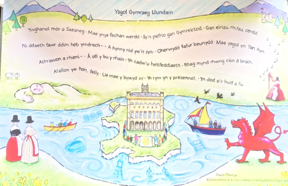

Cysylltu / Contact
Siaradwch â ni.
Ar gyfer derbyniadau, ymweliadau, swyddi, digwyddiadau cymunedol neu gwestiynau cyffredinol.
Manylion
Ffôn: 020 8575 0237
E-bost: info@ysgolgymraegllundain.co.uk
Cyfeiriad:
Canolfan Gymunedol Hanwell, Westcott Crescent, Hanwell, London W7 1PD

Map placeholder: Hanwell Community Centre, W7 1PD